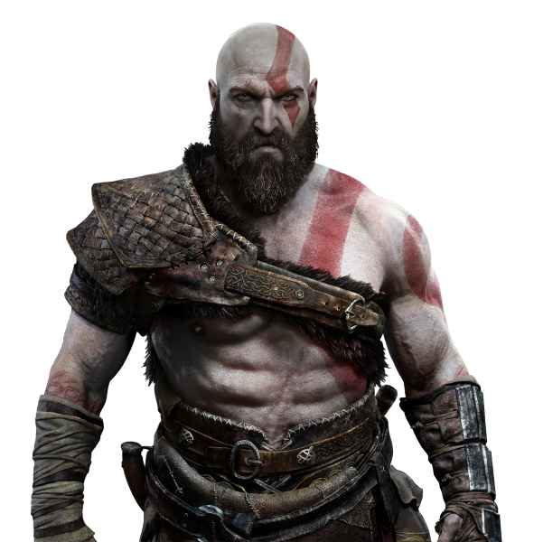
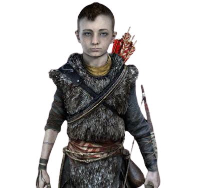

Jogabilidade
God of War é um jogo eletrônico de ação-aventura apresentado a partir de uma perspectiva em terceira pessoa. O jogo conta com uma jogabilidade muito diferente dos jogos anteriores e foi reconstruído a partir do zero. Apesar de God of War: Ascension (2013) ter introduzido o modo multijogador para a série, este título é de apenas de um jogador. Ao contrário das edições anteriores, que contavam com uma câmera cinematográfica fixa em terceira pessoa (com exceção do side-scroller em 2D de 2007, Betrayal), este novo capítulo apresenta uma perspectiva em terceira pessoa com câmera livre posicionada sobre o ombro do personagem. Cinematograficamente, o jogo é apresentado em plano-sequência, sem cortes de câmera ou telas de carregamento. Inimigos no jogo derivam da mitologia nórdica, como trolls, ogros e draugrs, bem como as regressadas, seres distorcidos pela magia seiðr. O jogo é aberto à exploração, mas não é de mundo aberto. Devido ao fato dele ser explorável, os jogadores podem encontrar batalhas contra chefes opcionais e chefes regulares baseados em histórias. Além disso, os jogadores podem viajar rapidamente para locais diferentes.
Kratos utiliza um machado de guerra mágico chamado Machado Leviatã, que pode ser infundido com habilidades elementares e jogado em inimigos. Por exemplo, Kratos pode arremessá-lo contra um inimigo e magicamente chamá-lo de volta para sua mão (semelhante ao martelo do Thor, Mjölnir). Kratos também pode carregar o machado e soltar uma explosão de energia que causa dano à inimigos próximos. No jogo, o machado tem ataques leves e pesados; ataques pesados permitem que Kratos lance inimigos para o ar. Inimigos maiores, como um ogro, têm alvos precisos e jogar o machado nesses alvos vai atordoar o inimigo. A arma também pode ser lançada em objetos ambientais, como um contêiner, para provocar uma explosão que danificará os inimigos próximos. O Machado Leviatã pode ser melhorado usando runas, com um slot sendo para ataques leves e outro para ataques pesados. Isso proporciona aos jogadores uma variedade de opções para atender seu próprio estilo de jogo. Outra nova arma que Kratos utiliza é um escudo. Quando não está em uso, ele se dobra e aparece como uma armadura no antebraço esquerdo de Kratos. Quando convocado, o escudo pode ser usado ofensivamente e defensivamente. Kratos também utiliza um combate corpo-a-corpo, um recurso introduzido originalmente em Ascension.
Similar aos jogos anteriores, existe uma habilidade de "Fúria" chamada Fúria Espartana. Como nas versões anteriores, a habilidade "Fúria" possui um medidor que se enche gradualmente durante o combate. Com essa habilidade, Kratos usa poderosos ataques de mãos vazias, em oposição às armas, para causar grandes danos aos inimigos. O jogo também apresenta elementos semelhantes aos jogos de RPG. Existem recursos de criação para o jogador descobrir, na qual permitem criar novas ou atualizar blindagens existentes com melhores vantagens. Os jogadores também acumulam uma moeda chamada Hacksilver, um componente chave na elaboração e compra de novos itens. Pontos de experiência (XP) são usados para aprender novas habilidades de combate.
Em todo o mundo do jogo, os jogadores encontram baús contendo itens aleatórios, como Hacksilver e encantamentos para melhorar armaduras e armas, bem como dois itens especiais, "Idunn Apples" e "Horns of Blood Mead", que aumentam o capacidade máxima dos medidores de saúde e fúria, respectivamente. Os medidores são reabastecidos por orbes verdes e vermelhos, respectivamente, encontrados em todo o mundo do jogo e derrubados por inimigos abatidos. Os Quick Time Events não são como nos jogos anteriores. Em vez disso, os inimigos exibem duas barras acima de suas cabeças, um para a saúde e outro para o atordoamento. Encher o medidor de atordoamento ajuda a derrotar inimigos mais difíceis. Quando o medidor de atordoamento estiver cheio, será exibido um botão de captura. Dependendo do inimigo, Kratos pode rasgá-lo ao meio, ou ele pode agarrá-los e jogá-los em outros inimigos, entre outros possíveis resultados. Como a capacidade de nadar foi cortada do jogo, em vez disso, os jogadores usar um barco para atravessar corpos de água quando necessário.
Embora os jogadores joguem como Kratos durante todo jogo, há momentos em que o jogador controla passivamente o filho de Kratos, Atreus. Um botão é dedicado a seu filho e sua utilização depende do contexto. Por exemplo, se o jogador precisar de ajuda, ele pode olhar para um inimigo, apertar o botão e Atreus usará seu Arco de Garra para atirar flechas no inimigo. As flechas tem pouco efeito na saúde de um inimigo, mas aumentam o medidor de choque. Ao longo do jogo, Atreus ajuda no combate, na travessia, na exploração e na resolução de quebra-cabeças. Ao enfrentar um grande número de inimigos, ele distrai os mais fracos, enquanto Kratos luta contra os mais fortes. Se muitos inimigos se juntarem em Atreus, ele será eliminado pelo restante daquele combate. assim como Kratos, Atreus adquire novas habilidades, armaduras, flechas especiais, como flechas de raios, bem como ataques rúnicos para o seu arco, mas tem apenas um slot em vez de dois. Os ataques rúnicos de Atreus invocam diferentes animais espectrais com diferentes habilidades. Por exemplo, um invoca um lobo que ataca inimigos, enquanto outro invoca o esquilo Ratatosk, que vai cavar orbes para os medidores de saúde e fúria mencionados anteriormente
Sinopse
Mundo
Enquanto os primeiros sete jogos foram vagamente baseados na mitologia grega, este título leva a série à mitologia nórdica. Seis dos nove reinos da mitologia nórdica podem ser explorados. Antecedendo os Vikings, a maioria do jogo ocorre na antiga Noruega no reino de Midgard, habitado por seres humanos e outras criaturas e é o mesmo reino que o mundo grego havia existido. Quanto mais criaturas começaram a aparecer muitos humanos fugiram. Outros reinos visitados como parte da história incluem Alfheim, a casa mística dos elfos da luz e das trevas, Helheim, a terra gelada dos mortos, e Jotunheim, a terra montanhosa dos gigantes. Reinos exploráveis opicionais incluem Niflheim, um reino que possui uma neblina venenosa com uma estrutura de recompensas parecida a um labirinto, e o reino de fogo Muspelheim, caracterizando as seis Provas de Muspelheim; A conclusão de cada prova concede recompensas e Kratos e Atreus avançam para mais perto do topo de um grande vulcão. O acesso aos outros três reinos – Asgard, lar dos deuses Æsir, Vanaheim, lar dos deuses Vanir e Svartalfheim, lar dos anões – foi bloqueado pelo governante de Asgard e dos deuses Æsir, Odin. No centro dos reinos está a árvore mítica Yggdrasil, que conecta cada reino. Embora cada reino seja um mundo diferente, eles existem simultaneamente no mesmo espaço. Viajar para os reinos pode ser feito pelo uso da Bifröst, uma raiz da Yggdrasil contida dentro de um templo localizado no centro do Lago dos Nove. O templo foi criado pelo então morto Tyr, um pacífico Deus da Guerra que viajou para outras terras e aprendeu sobre suas mitologias; Odin o matou porque acreditava que Tyr estava secretamente ajudando os gigantes e tentaria derrubá-lo.
Personagens
Os protagonistas do jogo são Kratos (atuação de Christopher Judge) e seu jovem filho Atreus (Sunny Suljic). Kratos é um guerreiro natural de Esparta que se tornou o deus grego da guerra e é filho de Zeus. Depois de terminar na antiga Noruega, ele conheceu sua segunda e agora falecida esposa, Laufey (chamada de Faye), com quem teve um filho, Atreus. Atreus que não sabe sobre o passado de Kratos ou sobre sua natureza divina, mas consegue ouvir os pensamentos de outros seres. O principal antagonista é o deus Æsir Baldur (Jeremy Davies), o irmão de Thor, cujos filhos Modi e Magni (Nolan North e Troy Baker, respectivamente) ajudam Baldur. Seus pais são Odin e a deusa Vanir Freya (Danielle Bisutti). Freya tentou deixar Odin, já que ela não o amava verdadeiramente, e Odin a baniu para Midgard, na qual ela ficou conhecida como a Feiticeira dos Bosques. Para proteger seu filho de uma profecia que predisse sua morte, Freya lançou um feitiço de imortalidade em Baldur, que também o levou a não sentir qualquer sensação, seja de dor ou prazer. Baldur ressente a mãe por isso. Um visco, que Freya mantinha em segredo, era a única forma de reverter a magia. Outros personagens incluem Mímir (Alastair Duncan), que afirma ser o homem mais inteligente vivo, e os irmãos Huldra, Brok (Robert Craighead) e Sindri (Adam J. Harrington), um par de anões que aparecem em vários pontos do mundo e ajudam Kratos e Atreus a forjar novos equipamentos. Suas armas, incluindo o martelo do Thor Mjölnir, foram usadas pelos deuses Æsir. Eles também forjaram o Machado Leviatã de Kratos, que originalmente pertencia a Faye. A segunda esposa de Kratos também o presenteou com seu Escudo do Guardião. O espírito da deusa grega Atena (Carole Ruggier) faz uma aparição, e Zeus (Corey Burton) aparece como uma ilusão para Kratos em Helheim.
Personagens Principais
Kratos

Atreus

Enredo
Muitos anos se passaram desde que Kratos teve sua vingança contra os deuses do Olimpo, e agora ele vive com seu filho Atreus em Midgard. O jogo começa após a morte da segunda esposa de Kratos e mãe de Atreus, Faye. Seu último desejo era que suas cinzas fossem espalhadas no pico mais alto dos nove reinos nórdicos. Antes de iniciar sua jornada, Kratos é confrontado por um homem misterioso com poderes divinos. Depois de aparentemente matá-lo, Kratos e Atreus partem em sua jornada.
Na jornada, Kratos e Atreus encontram a Serpente do Mundo, Jörmungandr, que se mostra amigável. Depois de encontrar uma espécie de névoa negra que só pode ser penetrada por uma luz especial do reino de Álfheim, eles recebem ajuda da Bruxa da floresta para recuperar a luz. Ao chegar ao pico de Midgard, eles ouvem uma conversa entre o misterioso homem, revelado como sendo Baldur, dois homens e um prisioneiro chamado Mímir. Depois que eles saem, Kratos e Atreus conversam com Mímir, que está preso há 109 invernos em uma árvore e teve um dos olhos arrancado. Ele revela que o ponto mais alto dos nove reinos e, portanto, o objetivo deles fica em Jotunheim, a terra dos Gigantes. No entanto, há muito a viagem para o reino foi bloqueada, com a intenção de afastar Odin e Thor. Mímir, no entanto, conhece outra passagem. Ele instrui Kratos a cortar a sua cabeça e revivê-lo através da bruxa, que é revelada como a deusa Freya, o que faz com que Kratos imediatamente desconfie dela. Tanto Freya quanto Mímir avisam que Kratos deve contar a seu filho sobre sua verdadeira natureza.
A viagem de Kratos, Atreus e Mímir para coletar os componentes necessários para abrir o portal de Jotunheim é interrompida quando eles são atacados pelos irmãos Modi e Magni. Depois que Kratos mata Magni, Modi foge. Enquanto os heróis procuram pela runa que os permitirá viajar para o outro reino, Modi volta e os embosca. Atreus tem um acesso de fúria durante a luta, o que faz com que ele adoeça. Modi foge novamente e Kratos e Mímir levam a criança para a cabana de Freya, na esperança que a deusa possa salvá-la. Freya explica que a condição de Atreus vem da contradição mental de um deus acreditando ser mortal. Ela diz a Kratos que, para curar Atreus, ele deve recuperar o coração do Guardião da Ponte dos Condenados em Helheim. Ela avisa que o Machado Leviatã será inútil por lá. Kratos, então, volta para casa para desenterrar suas armas antigas, as Lâminas do Caos. No caminho, é assombrado pelo espírito de Atena, que o lembra de seu passado. Depois de tomar o coração do guardião da ponte em Helheim, ele tem uma visão assombrosa de Zeus. Atreus é curado e Kratos conta a ele sobre sua verdadeira natureza- Atreus é também um deus. A revelação faz com que Atreus se torne arrogante, matando um Modi enfraquecido, contra as ordens de Kratos.
Quando estão no pico de Midgard, prestes a embarcar para Jotunheim, Kratos e Atreus são emboscados por Baldur, resultando na destruição do portal e a queda dos três para Helheim. Atreus faz as pazes com Kratos e eles descobrem sobre o relacionamento familiar de Freya e Baldur. De volta a Midgard, Mímir percebe que há outra maneira de chegar a Jotunheim, mas é preciso recuperar o seu olho perdido. Após obtê-lo da barriga de Jörmungandr, que inadvertidamente os engoliu, eles são novamente atacados por Baldur. Freya intervém na tentativa de proteger seu filho. Durante a luta, Baldur é perfurado por uma ponta de flecha de visco que Atreus tinha em sua aljava, quebrando o feitiço de Freya sobre ele. Baldur é derrotado e embora Kratos lhe dê uma oportunidade de recuar, o Aesir tenta estrangular Freya. Kratos, então, o mata. Uma Freya em luto jura vingança a Kratos e o insulta por esconder a sua verdadeira natureza de Atreus. Kratos finalmente conta ao filho sobre seu passado e como ele matou seus companheiros deuses gregos, incluindo seu pai, Zeus. Atreus se pergunta se todos os deuses tendem a cometer parricídio. Kratos diz a ele que ambos devem aprender com suas experiências e não repetir os erros de seus antecessores. Uma silenciosa Freya sai com o cadáver de Baldur. Mímir diz que Kratos fez a coisa certa e, esperançosamente, sugere que Freya acabará por perdoá-lo.
Em Jotunheim, eles encontram um templo com um mural representando suas aventuras, mostrando que os gigantes previram tudo o que aconteceria e, vagamente, o que ainda estaria por vir. Além disso, eles descobrem que Faye era uma giganta que decidiu ficar para trás em Midgard, tornando Atreus parte gigante, deus e mortal. Sua luta com Baldur foi mostrada, revelando que ele estava realmente atrás de Faye o tempo todo, sem saber que ela já estava morta. Também é revelado que Atreus foi nomeado Loki por sua mãe. Imaginando se Faye planejou isso com antecedência, Kratos e Atreus cumpriram sua promessa e espalharam suas cinzas no pico, contemplando uma cadeia de montanhas formada pelos cadáveres dos gigantes. Após isso, Kratos revela a Atreus que seu nome foi dado em homenagem a um compassivo guerreiro espartano. Quando eles voltam a Midgard, Mímir os avisa que o Fimbulwinter de três anos começou, o que significa que é um prelúdio ao Ragnarok, que não deveria ocorrer por mais de cem anos. No final secreto do jogo, Kratos e Atreus retornam para casa e dormem. Atreus tem uma visão de que, no final do Fimbulwinter, Thor chegará em sua casa para enfrentá-los.
Desenvolvimento
O desenvolvimento de God of War começou em 2013, o que foi confirmado pelo diretor criativo da Santa Monica Studio, Cory Barlog, na primeira PlayStation Experience em 6 de dezembro de 2014. Barlog disse que o jogo estava em desenvolvimento muito cedo e que não seria uma pré-sequência, mas possivelmente um reboot. Em abril de 2016, a Polygon informou que a arte conceitual do próximo título havia vazado. As imagens mostravam Kratos no mundo da mitologia nórdica; um conceito originalmente considerado pelo criador da série, David Jaffe, após Kratos ter eliminado os deuses gregos. O anúncio oficial do jogo veio acontecer na Electronic Entertainment Expo 2016 (E3 2016) com uma gameplay de demonstração, confirmando que a arte conceitual era verdade. A gameplay mostrou Kratos com barba e agora com um filho, e ele estava ensinando o menino a caçar. O par também lutou contra um troll. O final da demo mostrou o título God of War e confirmou que estava em desenvolvimento para PlayStation 4. A E3 também confirmou que Barlog havia retornado à série como diretor do novo título. Barlog foi um dos principais contribuintes no desenvolvimento da série God of War desde o lançamento original em 2005, com seu papel mais notável sendo diretor de God of War II (2007). Este título foi o seu quinto jogo da série.
Ao nomear o jogo, Barlog afirmou que foi deliberadamente intitulado God of War, sem numerais ou subtítulos, porque embora seja uma continuação da série, Barlog disse: "estamos reimaginando tudo." A então chefe da Santa Monica Studio, Shannon Studstill e Barlog disseram que a Sony Interactive Entertainment precisou ser convencida a fazer outro jogo da série God of War, já que muitas pessoas da Sony queriam que a série "dormisse", devido à fraca recepção do jogo anterior, Ascension. Ao explicar do porquê Barlog foi trazido de volta, Studstill disse que ele "conhecia muito bem a série" e sabia da necessidade de "trazer alguém que entende que a história é o respeito que a franquia merece." Barlog continuou dizendo: "Você tem que saber as regras para quebrar as regras." O criador da série, David Jaffe, também foi considerado, mas não estava disponível.
Ao explicar a transição da mitologia grega para a mitologia nórdica, Barlog disse: "é uma espécie de mudança A.C.–D.C.. Estamos em movimento e começando do zero e avançaremos com isso." Antes de se estabelecer na mitologia nórdica, a mitologia egípcia também foi considerada. Barlog disse que metade da equipe era para isso, mas já que "há muito mais sobre a civilização – é menos isolada, menos estéril", eles decidiram usar a mitologia nórdica porque queriam que o foco permanecesse em Kratos: "Tendo muito em volta distrai o tema central de um estranho em uma terra estranha." Ao explicar por que Kratos estava agora no mundo nórdico, Barlog disse que sistemas de crenças de diferentes culturas coexistiram, mas eles foram "separados geograficamente", sugerindo que Kratos viajou da Grécia para a Noruega (Escandinávia) após a conclusão de God of War III; para esclarecer a conclusão desse jogo, Barlog disse que Kratos "não destruiu o que se acreditava ser o mundo inteiro, mas apenas a parte que foi governada pelos gregos." Barlog também confirmou que este jogo antecede os Vikings; é o momento em que os seus deuses caminhavam sobre a Terra. Também foi confirmado que este não seria o último jogo de Kratos. Barlog disse que os jogos futuros poderão ver a série ambientada na mitologia egípcia ou maia, e que, embora este jogo se concentre na mitologia nórdica, ele alude ao fato de que existem outras mitologias coexistentes no mundo. Barlog também disse que gostou da ideia de ter diretores diferentes para cada jogo, visto durante os primeiros sete jogos, e embora ele possivelmente não possa dirigir outro God of War, ele ainda estaria na Santa Monica para trabalhar em futuros jogos.
A maior parte da equipe de desenvolvimento que trabalhou no God of War original trabalhou nesse novo título. Eles alegaram que eles combinaram a nova jogabilidade com o mesmo nível de acessibilidade que os títulos anteriores ofereciam. Foi confirmado que o jogo não apresentaria nenhum sistema de moralidade ou história de ramificação; Todos os jogadores têm a mesma experiência de história. Os desenvolvedores também confirmaram que alguns dos minijogos mais controversos encontrados em títulos anteriores (como o minijogo de sexo) não retornariam. A contagem de inimigos foi aumentada para até 100 na tela; God of War III e Ascension suportavam até cinquenta. Algumas características de jogabilidade encontradas nos jogos anteriores foram cortadas, como desafios de salto, natação e plataformas de morte instantânea; estas características foram cortadas devido à câmera estar mais perto de Kratos. Embora o jogo anterior, Ascension, tenha introduzido o modo multijogador na série, a equipe decidiu abandonar o modo para se concentrar na experiência de um jogador. Ao mudar a jogabilidade, Studstill disse: "Eu senti que, para reinventar, nós realmente precisávamos mudar um monte de coisas." Em relação à mudança de câmera, Barlog disse que eles queriam uma experiência mais íntima e controlada pelo jogador.
O jogo inteiro foi feito em plano-sequência, sem cortes de câmera, o que significa que não há telas de carregamento. Barlog disse que cerca de quarenta por cento da equipe não concordou com esta decisão originalmente devido ao aumento do trabalho e produção para implementar o recurso, especialmente desde que esta foi a primeira vez que uma técnica em plano-sequência estava sendo usada para um jogo AAA tridimensional, o que significa que Barlog não tinha exemplos para mostrar se isso funcionaria ou se era uma boa ideia (o único outro jogo que utilizou totalmente esta técnica foi o jogo independente Hellblade: Senua's Sacrifice, que também começou a ser desenvolvido em 2014 e foi lançado oito meses antes de God of War). Depois que o jogo foi finalizado e a equipe começou a jogá-lo, Barlog disse que eles finalmente entenderam sua visão e disseram que era uma característica que eles deveriam usar a partir de agora. Barlog originalmente lançou a ideia de uma câmera em plano-sequência enquanto ele estava na Crystal Dynamics trabalhando em Tomb Raider (2013), mas ela foi rejeitada. A Sony, por outro lado, foi muito mais favorável às ideias criativas de Barlog. Barlog e o designer Rob Davis tiveram algumas influências da série Resident Evil, particularmente de sua "combinação de exploração e eliminação de cortes de câmera" e a "visão forte" de Resident Evil 7: Biohazard (2017) com uma equipe que toma "decisões ousadas e tem um forte público que os seguem." Barlog também observou como houve inicialmente discordância sobre a distância da câmera, com ele querendo ela perto do ombro do personagem, enquanto a equipe de combate queria mais longe, como os jogos Assassin's Creed e Batman: Arkham, antes que ele eventualmente encorajasse a equipe a ir com uma câmera mais próxima.
Explicando o machado de Kratos, o designer Jason McDonald, que trabalhou na série desde o primeiro jogo, disse que o machado foi escolhido porque eles queriam uma direção mais fundamentada para o jogo. Inicialmente, eles não sabiam como torná-lo dinâmico e único, como as lâminas eram anteriormente. Depois que eles surgiram com o conceito de jogar o machado e fazer com que ele retornasse para Kratos, "as coisas começaram a se encaixar". McDonald disse que o combate com o machado é um pouco mais lento que as lâminas, "mas é tão fluido e tão brutal como nunca foi." Barlog inspirou-se em Dark Souls (2011), que influenciou o sistema de combate do jogo, particularmente o seu loop de jogabilidade e tomada de decisão estratégica, bem como a abordagem do jogo para contar histórias. Além disso, os designers Anthony DiMento e Luis Sanchez revelaram como o nível de design e exploração de God of War foi influenciado por Bloodborne (2015), pois queriam "apenas ter um vasto mundo para respirar um pouco" e expandir a descoberta de jogadores incluindo "micro-loops onde você está desbloqueando caminhos e atalhos com um determinado propósito". DiMento disse que uma equipe dedicada a se concentrar na exploração do jogo foi formada. Um desafio era criar missões em um mundo que não tivesse personagens não jogáveis fora da narrativa central. DiMento disse: "Eu me propus a criar missões que fossem leves, mas também flexíveis o suficiente para ser usado em vários locais, enquanto oferecia um conjunto variado de atividades de busca." Isso resultou nos "espíritos errantes" (fantasmas com ligações com o mundo) encontrados durante todo o jogo. Ter os espíritos contando suas histórias "fez o mundo se sentir mais vivo". Os desenvolvedores acabaram com um sistema de quatro níveis para missões secundárias: as missões de nível superior eram dos personagens Brok e Sindri, o nível seguinte de espíritos errantes, depois mapas de tesouro e artefatos, e o nível inferior eram marcos, como destruir todos dos corvos de Odin. As missões de Brok e Sindri foram feitas em masmorras, enquanto as outras foram usadas para exploração. Os desenvolvedores também tiveram que encontrar as razões que motivariam Kratos a fazer essas missões. Para Brok e Sindri, foi para obter equipamentos mais poderosos, mas para os espíritos errantes, foi por causa da ingenuidade de Atreus e sua natureza de bom coração, bem como oportunidades para Kratos para ensinar Atreus uma lição.
Ao contrário dos jogos anteriores, a Santa Monica não fez uma demonstração especificamente para lançamento público. Barlog explicou que isso teria atrasado o jogo em alguns meses. Ele também confirmou que o jogo foi desenvolvido para o PlayStation 4 padrão, mas o jogo "se beneficiaria do poder" do PlayStation 4 Pro; uma versão atualizada do PlayStation 4 que pode renderizar jogos em 4K e foi lançado alguns meses após o anúncio de God of War. Os jogadores com um PS4 Pro têm duas opções para favorecer a resolução ou favorecer o desempenho ao jogar o jogo. A resolução favorável executa o jogo em 4K com uma renderização de 30 quadros por segundo (fps), enquanto a opção de desempenho executa o jogo em 1080p e atinge 60 fps. No final de dezembro de 2016, Barlog confirmou que o jogo era jogável do início ao fim, e mais tarde disse que a história do jogo levaria de 25 a 35 horas para ser concluída, o que é significativamente mais do que os quatro títulos anteriores, que tinham uma média de 10 horas para concluir.
Um novo trailer foi exibido na E3 2017, apresentando o novo gameplay, cinematografia e personagens. No trailer, Kratos foi mostrado usando um escudo que ele poderia usar ofensivamente e defensivamente. Em um ponto no trailer, Kratos encontra um vaso grego com ele, empunhando suas infames lâminas. Durante o trailer, uma mulher anônima avisa a Kratos sobre os deuses nórdicos, pois eles sabem o que ele fez com os deuses gregos, enquanto um par de lobos também foi mostrado. O trailer termina com Kratos e Atreus encontrando a Serpente do Mundo. Atreus conseguiu traduzir o que ela dizia, dizendo que queria ajudar a dupla. Foi confirmado que o jogo seria lançado no início de 2018. Desde então, até o lançamento do jogo, a Santa Monica incluiu uma seção no site do God of War intitulada "The Lost Pages", detalhando algumas das tradições do mundo nórdico de God of War. Em janeiro de 2018, a data de lançamento do jogo foi confirmada para 20 de abril de 2018. Também foi lançado um trailer que mostrava que o personagem Mímir da mitologia nórdica teria um papel no jogo. O desenvolvimento de God of War foi finalizado em 22 de março de 2018.
Caracterização
Durante o desenvolvimento inicial, houve uma discussão sobre ter um protagonista diferente para o jogo, com alguns da equipe dizendo que Kratos era "irritante". Barlog disse que precisou de muito convencimento para manter Kratos.
Barlog disse que Kratos teve que mudar seu ciclo de violência e aprender a controlar sua raiva. Ele disse que o personagem tinha feito muitas decisões erradas, o que levou à destruição do Olimpo, e queria saber o que aconteceria se Kratos tivesse feito uma boa decisão. O nascimento do próprio filho de Barlog influenciou a ideia da mudança de personalidade de Kratos. A série de televisão cancelada live-action de Star Wars também foi uma influência. A ligação entre Kratos e seu filho está no coração do jogo e Barlog disse: "Este jogo é sobre Kratos ensinando seu filho como ser um deus, e seu filho ensinando Kratos como ser humano novamente." Fazendo referência ao personagem Hulk da Marvel Comics, Barlog disse que, em relação à Kratos, "nós já contamos a história do Hulk. Queremos contar a história do [Bruce] Banner agora". Um de seus objetivos era fazer com que Kratos se tornasse "um personagem mais nuançado e interessante." Ao mudar o foco narrativo, Studstill disse: "Eu acho que nós sabíamos que a franquia precisava evoluir naquele impacto emocional e ser algo mais interessante para a geração mais antiga de jogadores."
Christopher Judge, mais conhecido por seu papel como Teal'c em Stargate SG-1, substituiu Terrence C. Carson como Kratos; Carson havia dublado Kratos desde o God of War original. Comentando em resposta à mudança, Carson disse: "A Sony entrou em uma nova direção. Deixe-os saber o que você pensa". Barlog explicou que da forma como os jogos anteriores foram feitos, eles conseguiram que alguém fizesse a captura de movimento em vez do dublador. Embora Carson tenha feito a captura de movimento para Kratos em Ascension, Barlog disse que a mudança de ator foi feita por causa do tipo de trabalho de câmera que eles queriam fazer. Para o novo trabalho de câmera, eles precisavam de alguém que estivesse mais próximo do tamanho de Kratos para fazer a captura de movimento junto com uma criança. Carson era inadequado para isso porque era muito mais baixo que Kratos, que tem mais de 1,80m de altura: "Compensando [a altura de Carson] para o tamanho de uma criança, acabou sendo quase impossível tentar filmar ele e fazer as animações." Judge foi escolhido porque tinha o tamanho de um jogador de basquete e corpo de um jogador de futebol profissional. Ele também foi escolhido por causa da química com seu então colega de 10 anos, Sunny Suljic, que interpreta o filho de Kratos, Atreus; A opinião de Suljic também foi decisiva na hora da escolha do intérprete de Kratos, que de todas as audições, ele gostou mais de Judge. Os dois se uniram bem, e Judge descreveu seu tempo com Suljic como o tempo que ele perdera com seus próprios filhos. Ao entrar no papel de Kratos, Judge tomou como uma oportunidade para adicionar algo novo ao personagem. Ele pesquisou o personagem e o desempenho de Carson, mas decidiu não imitá-lo. Quando a Santa Monica decidiu ir em uma nova direção, ele resolveu começar de novo. Judge foi descartado quando leu o roteiro pela primeira vez, afirmando que "era um roteiro real", e não apenas "uma maneira de entrar em batalhas". Ele disse que "foi realmente grande esse tipo história, desse relacionamento e dessa mitologia louca." Enquanto Judge fez toda a captura de movimento de Kratos para as cenas cinematográficas, o dublê Eric Jacobus fez toda a captura de movimento de combate de Kratos; Jacobus foi encontrado pelos animadores de God of War no YouTube. Em vez de ir diretamente a Santa Monica para fazer o teste, Jacobus gravou uma fita de audição e eles imediatamente o contrataram.
Durante a E3 2016, a GameSpot erroneamente relatou que o nome do filho de Kratos era Charlie, que Barlog negou rindo. Em janeiro de 2017, depois que um fã baixou a faixa de abertura de God of War e viu os detalhes sobre ela dizendo "Uma introdução a Kratos e Atreus", Barlog confirmou no Twitter que Atreus era na verdade o nome do filho. Barlog disse que Atreus não sabia que Kratos era um semideus e não sabia sobre seu passado. Eles não revelaram detalhes da mãe de Atreus antes do jogo ser lançado pelo fato dela ser uma parte crítica da narrativa. Barlog afirmou que durante o jogo, Atreus seria "como mágica, um recurso de combate adicional, e [o jogador estará] treinando-o e ensinando-o." Os desenvolvedores afirmaram que Atreus não seria um fardo durante o jogo. A equipe experimentou várias abordagens diferentes para Atreus para garantir que ele fosse uma presença capacitadora. Barlog disse que não queria que o jogo fosse uma missão de escolta onde a I.A. causasse problema ao jogador. O objetivo deles era que Atreus aumentasse as capacidades de Kratos sem que Atreus se tornasse uma responsabilidade. Isso resultou nos desenvolvedores designando um botão de comando para Atreus, assim como para ele agir livremente. Durante o combate, Atreus também foi projetado para chamar locais inimigos, já que devido a câmera estar mais perto de Kratos, alguns inimigos podem ser difíceis para o jogador ver. Jason McDonald disse que precisou de várias iterações com os inimigos e Atreus para fazer tudo funcionar em conjunto.
No início do desenvolvimento, sugeriu-se que Atreus fosse cortado ou minimizasse significativamente seu papel, devido aos muitos desafios de desenvolvimento e despesas financeiras. Barlog afirmou que o jogo poderia ter funcionado sem Atreus, mas teria sido completamente diferente, comparando-o ao filme de 2013 All Is Lost. Barlog disse que com apenas Kratos, teria sido "um personagem que fala para si mesmo ocasionalmente, mas em geral, seria muito silencioso e todo mundo ia vai falar em nórdico antigo, de modo que você não vai entender nada que alguém está dizendo." Depois de ouvir o caso de Barlog, a Sony deu-lhe a liberdade de incorporar Atreus. O level design Rob Davis também notou que, com Atreus, isso permitia "oportunidades significativas de gameplay e contar histórias que poderiam não ser possíveis." Depois que God of War foi revelado na E3 2016, foi feitas comparações com o jogo da Naughty Dog, The Last of Us (2013), que também contou com uma história de estilo de jogabilidade pai-filho. Barlog achou que era "fantástico" ser comparado a esse jogo e achou estranho que algumas pessoas considerassem as semelhanças como algo negativo. Embora ele não afirme diretamente que eles foram influenciados por The Last of Us no desenvolvimento de God of War, ele disse: "Eu acho que todos somos inspirados um pelo outro." Ele usou, no entanto, The Last of Us como um exemplo para mostrar à equipe de desenvolvimento como um companheiro dentro do jogo poderia funcionar sem que o jogo se tornasse uma missão de escolta.
Música
A trilha sonora de God of War foi composta por Bear McCreary, que é mais conhecido por seu trabalho em séries de televisão como Battlestar Galactica, Outlander e The Walking Dead. McCreary foi chamado pela Santa Monica Studio em novembro de 2014 para se reunir com os produtores musicais Peter Scaturro e Keith Leary para discutir "um projeto secreto"; McCreary já havia colaborado com Scaturro e Leary em SOCOM 4 U.S. Navy SEALs. Ideias de música popular, mitologia, instrumentos étnicos nórdicos, escrita vocal e desenvolvimento temático clássico foram discutidas, com as quais McCreary corretamente adivinhou que as discussões eram sobre um novo God of War. Ele se reuniu com Barlog no início e discutiram sobre a visão narrativa do jogo. Depois de se encontrar com Barlog, McCreary sentiu que a franquia estava em boas mãos porque God of War II, que Barlog também dirigiu, era o seu título preferido da série.
Durante as discussões iniciais, McCreary percebeu que precisava compor canções completamente novas para o jogo e não reutilizar qualquer música anterior da série. Ele disse que embora ame esses jogos, ele "não os descreveria como emocionalmente dinâmicos." Baseado em sua memória da música dos jogos anteriores, no entanto, ele foi inspirado por seus sons, como "coros profundos, tambores e metais batendo" e os reinventou para o cenário nórdico. Ao garantir que a música representasse o cenário, McCreary passou meses pesquisando e ouvindo música folclórica da antiguidade viking, o que resultou nele usando "instrumentação exótica e variadas línguas de tradições folclóricas do norte da Europa." Ele também queria que a trilha sonora fosse enorme e variada, "cheia de picos e vales, pequenos encantamentos e peças gigantescas." O tema principal de Kratos em particular apresenta baixos instrumentos orquestrais, coro islandês, vocais masculinos profundos, poderosos vocais femininos (em particular da cantora Eivør Pálsdóttir das Ilhas Faroé), percussão popular e instrumentos de cordas nórdicos, como a nyckelharpa e a sanfona. A faixa "Witch of the Woods" usa um instrumento renascentista e barroco chamado viola da gamba, que é um ancestral do violoncelo moderno. A faixa "Deliverance", usado na batalha contra O Estranho, usa um hardanger fiddle.
O primeiro tema composto para o jogo foi "Memories of Mother". McCreary disse que o tema em si não era originalmente para a mãe de Atreus, Faye, mas sim para o próprio Kratos. Seus esboços iniciais era uma melancolia de diferentes variações. Depois que o jogo entrou em plena produção, McCreary e a equipe de desenvolvimento perceberam que era "muito triste e lírico representar Kratos". McCreary se afastou desse tema e se concentrou em escrever um novo, ou o que ele chamou de tema de Kratos, que ele achava ser mais representativo do personagem: "masculino, implacável e fodão". Ele passou vários meses trabalhando com Barlog, Scaturro, Leary, o diretor musical da Sony, Chuck Doud, e o restante da equipe de desenvolvimento fazendo esse novo tema. McCreary descreveu-o como "indiscutivelmente uma das minhas melodias mais satisfatórias e cativantes estruturalmente." Depois dele compôr mais faixas, McCreary percebeu que Faye precisava de um tema e seu original era "exatamente o que eu precisava". Esta melodia foi tecida ao longo de várias cenas e é apresentada como destaque no jogo como tema de Kratos. Este tema de três notas é mais obviamente ouvido na faixa-título, "God of War".
Quando foi decidido que God of War seria revelado na E3 2016, a Sony queria que McCreary executasse sua trilha sonora original com uma orquestra ao vivo na coletiva de imprensa. McCreary abriu a apresentação com o novo tema principal antes da revelação de God of War e tocou a música junto com a demo do jogo ao vivo durante a apresentação. Em 13 de janeiro de 2017, uma gravação ao vivo da E3 2016 da faixa de abertura de God of War foi lançada gratuitamente por tempo limitado. Barlog divulgou a faixa como um agradecimento aos fãs pelo trailer na E3 2016 de God of War, alcançando quinze milhões de visualizações no YouTube. Um álbum de trilha sonora, God of War (PlayStation Soundtrack), foi lançado digitalmente em 20 de abril de 2018 pela Sony Classical Records.
Recepção
God of War foi aclamado pela crítica especializada. No agregador de resenhas Metacritic, o jogo contém uma nota de 94/100 baseado em 118 resenhas, indicando uma "aclamação universal". Isso torna God of War o jogo de maior pontuação da franquia (empatado com o primeiro God of War), a quarta maior pontuação de todos os tempos para um jogo de PlayStation 4 e a maior pontuação para um exclusivo de PlayStation 4 original e não-remasterizado. O jogo recebeu elogios especiais por sua direção de arte, gráficos, novo sistema de combate, trilha sonora, história, uso da mitologia nórdica, personagens e sentimento cinematográfico; muitos críticos também consideraram o jogo como uma "conquista técnica" e um dos mais impressionantes jogos já desenvolvidos para consoles.Muitos também sentiram que havia revitalizado com sucesso a série sem perder a identidade central dos jogos anteriores.
A história foi bastante elogiada. Nick Plessas, da Electronic Gaming Monthly (EGM) disse que os momentos mais memoráveis da história são as interações entre Kratos e Atreus. Ele também observou que "muitas vezes há algum alívio cômico quando a brutalidade de Kratos e a ingenuidade encantadora de Atreus colidem." Além disso, ele reconheceu que a presença de Atreus mostrou um lado de Kratos nunca visto antes e que o personagem evoluiu emocionalmente: "A raiva e a dor de seu passado estão em constante conflito com seu desejo de poupar seu filho, o que se manifesta até mesmo nas ações e palavras mais sutis, demonstrando o esforço que ele está colocando". Plessas também sentiu que o caráter de Atreus era similarmente complexo. Ele citou que é fácil para personagens infantis "sucumbirem a uma série de arquétipos irritantes", mas Atreus é mais como "um jovem que está fazendo o melhor que pode em um mundo adulto". Joe Juba, da Game Informer, também elogiou a história, particularmente a relação entre Kratos e Atreus: "As interações de Kratos e Atreus variam de adversárias a compassivas e essas trocas têm amplo espaço para respirar e atrair jogadores. Juba disse que Kratos transmite mais caráter do que em qualquer jogo anterior da série. Peter Brown, da GameSpot, achou que, embora Kratos e Atreus fossem agradáveis, foi Mímir que roubou a cena. Ele também disse que, independentemente do personagem que o jogador conhece, o elenco de God of War é "forte, convincente e estranhamente encantador." Escrevendo para Game Revolution, Jason Faulkner elogiou a Santa Monica por criar uma sequência na qual os novos jogadores fossem capazes de entender sem, ao menos, terem jogado nenhum dos jogos anteriores, enquanto, ao mesmo tempo, fornecer referências que os fãs mais antigos gostariam de receber. Falando da relação entre Kratos e Atreus, Faulkner escreveu que "ver os dois crescerem ao longo da jornada é incrivelmente recompensador", comparando-os aos personagens Ellie e Joel de The Last of Us e Lee e Clementine de The Walking Dead da Telltale Games.
Em termos do sistema de combate do jogo, Plessas afirmou que ao contrário dos jogos anteriores, que muitas vezes dependem do jogador para usar muitos combos de forma sequencial, este jogo é "mais sobre movimentos individuais juntos em resposta à uma grande variedade de inimigos sendo travada." Embora essa diferença possa ser pequena, ele disse que os ataques independentes do machado "apresentam benefícios e desvantagens que os jogadores precisarão entender e dominar afim de ser o mais efetivo possível". Além disso, embora o machado seja "conceitualmente simples", é "mecanicamente fascinante" e "é um meio versátil de desmembrar os inimigos e um elemento-chave na solução de enigmas". Ele achou que o machado e todas as suas características eram "claramente recompensadoras de usar" e que tinha mais versatilidade do que todas as armas dos títulos anteriores da série. Juba disse que o Machado Leviatã é "uma ferramenta de destruição bem equilibrada e divertida". Ele gostou de como o sistema de combate se desdobrou gradualmente no decorrer do jogo; "embora aparentemente restritivo no início, os jogadores estarão alternando rapidamente entre armas e habilidades". Enquanto alguns críticos gostaram muito da capacidade de chamar o Machado Leviatã de volta para a mão de Kratos, Chris Carter, da Destructoid, por outro lado, sentiu que ficou "ultrapassado depois de um tempo" A implementação de Atreus foi elogiada. Plessas disse que Atreus é "surpreendentemente útil" e que "aterrissa no ponto perfeito no espectro entre independência e confiança". Faulkner notou que "a interação entre Kratos, o seu machado, seus punhos e escudo, e o arco-e-flecha de Atreus faz um sistema de combate impressionante." Apesar de sua abordagem diferente para o combate, em comparação com os jogos anteriores, Leon Hurley, da GamesRadar+, achou que o jogo era "tão brutalmente inflexível quanto os jogos anteriores".
Escrevendo para Polygon, Chris Plante elogiou o trabalho de câmera como uma "maravilha técnica", observando a natureza ininterrupta do jogo mudando de cutscenes para gameplay. Juba disse que essa decisão "mostrou-se imensamente gratificante durante grandes momentos, dando [ao jogador] uma visão íntima." Faulkner, no entanto, alegou que "pode ser difícil controlar a câmera e manter conta sobre os inimigos que você estiver lutando." Em sua resenha para a IGN, Jonathon Dornbush sentiu que a intimidade da câmera mais próxima torna todas as emoções "mais reais e impactantes". Falando sobre os visuais do jogo, Faulkner disse que estão incríveis "e em 4K e HDR este jogo vai além do que jogos como Horizon Zero Dawn nos mostraram ser possível nesta plataforma." Brown observou que "God of War é uma vitrine técnica e artística. É, sem dúvida, um dos jogos de consoles mais bonitos já lançados." Dan Ryckert, da Giant Bomb, afirmou que jogos como Uncharted: The Lost Legacy e Horizon Zero Dawn "fizeram um ótimo feito em um PS4 Pro numa televisão 4K, mas os visuais de God of War são um ponto de venda maior do que qualquer coisa que eu já vi na plataforma da Sony até hoje."
Apesar da grandeza do jogo, Plessas sentiu que as lutas contra chefões "não atingem a mesma frequência que nos últimos jogos". No entanto, ele disse que as poucas lutas contra chefões que estão presentes no jogo "deixam a série orgulhosa". No que diz respeito ao vasto mundo de God of War, Faulkner disse que "a melhor coisa sobre a exploração em God of War é que você pode participar nele tão pouco ou quanto quiser." Ele disse que uma excelente decisão de projeção foi que durante os pontos principais da trama, o jogo manterá o jogador na tarefa, enquanto no meio, o jogador pode explorar, permitindo que God of War "tenha o melhor dos dois mundos". Plessas observou que, embora os quebra-cabeças precisem ser pensados, eles não eram "difíceis de puxar o cabelo", como em jogos anteriores. Juba também descobriu que os quebra-cabeças não eram muito desafiadores, mas disse que eram divertidos.
Plessas sentiu que os elementos de RPG presentes no jogo tornam este título "único" em comparação com os jogos anteriores. Ele disse que o jogo permite que os jogadores "se especializem com Kratos para atender a tarefa específica em mãos, ou desenvolvam uma construção que melhor se adapte a um estilo de jogo preferido." Embora isso não facilitasse o jogo, ele sentiu que isso o tornava mais administrável. Juba observou que, embora este tipo de atualização "possa ser menos emocionante" em comparação com jogos anteriores, onde Kratos apenas aprende novos movimentos, ainda assim, "fornece um poderoso incentivo para explorar." Ryckert ficou desapontado com este tipo de personalização sentindo que a apresentação foi "meio crua" e que alguns materiais eram confusos já que havia pouca explicação para o que eles deveriam ser usados. Ele disse, no entanto, que era "legal" ver novas armaduras em Kratos.
Em termos de falhas, Plessas disse que "God of War é tão bom que sua falha mais notória é não deixar os fãs jogarem mais", já que o modo New Game Plus não era uma opção na época da crítica. Juba afirmou que "o ímpeto de God of War raramente falha, e quando isso acontece, o inconveniente é breve". Um exemplo que ele deu foi o mapa, dizendo que, embora os jogadores tenham liberdade para explorar, pode ser difícil rastrear a posição de Kratos. Ele também sentiu que o sistema de viagens rápidas era "estranhamente pesado" e que abre tarde demais no jogo. Embora tenha gostado desses recursos, Faulkner observou que alguns jogadores podem não gostar do fato de que God of War tem falta de agência de jogadores, e que os jogadores têm que explorar a maioria do jogo a pé ou de barco já que o recurso de viagem rápida é desbloqueado no final do jogo. Brown sentiu que se tem algo em God of War que foi uma decepção, foi a luta final contra Baldur: "Ele é ótimo do ponto de vista narrativo, desvendando de uma maneira que muda sua perspectiva, mas é a luta em si que deixa você querendo mais. Existem muitas batalhas com grandes chefões e testes de habilidade ao longo do jogo, mas essa luta não alcança as mesmas alturas, e parece que foi colocada um pouco segura demais." Hurley disse que sua única crítica era que "você pode ocasionalmente se sentir inseguro se você está fazendo algo errado, ou ainda se não tem o equipamento certo."
Vendas
Durante sua semana de lançamento no Reino Unido, God of War se tornou o título mais vendido da franquia, vendendo, somente em cópias físicas, 35% a mais do que God of War III. A partir de 21 de maio de 2018, o jogo permaneceu no topo da lista de vendas de todos os formatos por cinco semanas consecutivas, estabelecendo um recorde para um exclusivo de PlayStation 4 com mais semanas consecutivas em número um. Ele vendeu 46.091 cópias em sua primeira semana no Japão, o que o colocou em segundo lugar no gráfico de todas as vendas de formatos.
O jogo vendeu mais de 3,1 milhões de cópias em apenas três dias após o seu lançamento, tornando-se o exclusivo de PlayStation 4 mais rapidamente vendido até então. Foi o jogo mais vendido em seu mês de lançamento e contribuiu para que o PS4 fosse o console mais vendido naquele mês. Em um mês, o jogo vendeu mais de cinco milhões de cópias, com 2,1 milhões em vendas digitais. Até maio de 2019, o jogo vendeu mais de 10 milhões de cópias em todo o mundo, subindo para 12 milhões em junho, segundo um relatório da Sony. Em outubro de 2021, a Santa Monica Studio informou que as vendas totais do jogo ultrapassaram 19,5 milhões de unidades até agosto de 2021.